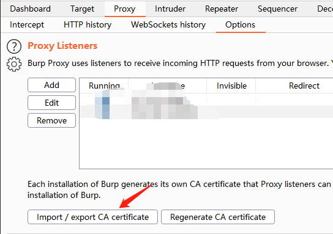
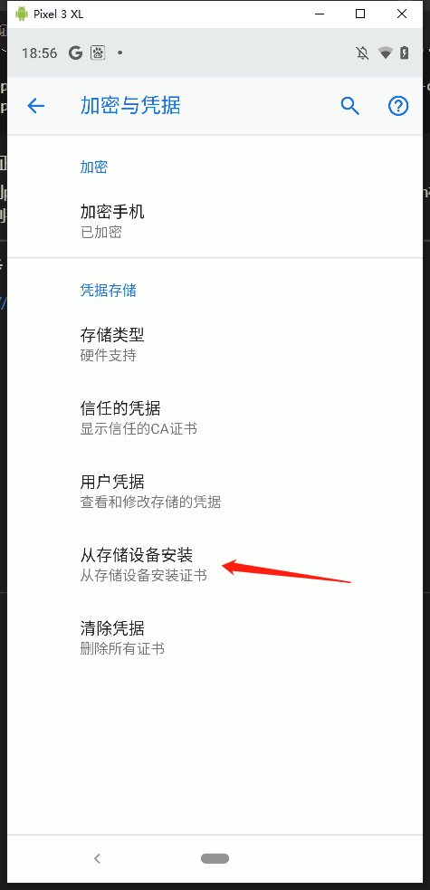

Burp证书导入到Android中的要点
背景
Burp是集抓包改包等等和网络通讯功能一体的软件，同时还支持自定义的插件用来实现各种各样的功能（比如做个伪DNS解析器）。
手机的网络代理设置为Burp监听的IP和端口可以实现对网络流量的监控，而将Burp的证书导入到Android中则可以对Https的流量进行监控。
在Android 7.0以前，用户安装的证书和安卓系统的证书没有区别，但是7.0以后应用可以选择只信任系统的证书，这就导致有可能出现流量获取不到的情况，因此本博客总结了一下现在市面上提到的各种将Burp证书（其实其他证书也类似，如Fiddler的证书）导入到系统根证书的方法，看下有什么特别的问题，以及介绍下自己采用的方法。
太长不看版本
在代理为burp的手机上访问获取DER格式的证书或者burp中导出证书；
使用openssl将DER格式的证书转换为扩展名为CRT的PEM证书：
1 | $ openssl x509 -inform der -in burp.der -outform pem -out burp.crt |
- 将证书推送到手机存储中，使用movecert模块将证书移动到根证书目录中；
详细流程
环境
Pixel 3XL，Android 9 release，Magisk root
获取Burp证书
安装证书首先要获取到证书，一般有以下的两种方式：
- 连接上代理之后访问
http://burp，点击右上角CA Certificate下载证书；
- Burp中
Proxy->Options->Import/export CA certificate导出到电脑中；

这两种方式导出的证书都是DER类型的，无法在某些机型和系统版本的安卓系统（至少在当前环境不行）中直接进行安装，所以就需要下一步，转换；
转换证书
证书有两种常见的格式，DER（Distinguished Encoding Rules）和PEM（Privacy Enhanced Mail），一个显著的区别就是DER是二进制形式存储的而PEM是以Base64存储；两者可以互相转换；
这两种格式的证书还有两种扩展，CRT和CER，CER是微软推的一种格式，具体有什么特别大的差别不太清楚；
转换可以使用openssl或者在线网站进行转换，其中openssl的方法如下：
1 | openssl x509 -inform [输入的证书格式，为der或pem] -in [输入证书文件名] -outform [输出的证书格式] -out [输出的证书文件名] |
安装证书
获取到pem格式的证书，安卓系统可以识别证书并进行安装了。安装证书有两种方式：
- 获取root权限之后，直接将更改名字后的证书推送到安卓系统的根证书目录（/system/etc/security/cacerts）；注意要修改证书名称，名称的来源是个hash，可以用以下命令生成，生成的文件名后面需要增加.0，用来处理hash冲突，如果冲突了新的文件以此使用递增的数字来表示：
1 | openssl x509 -inform PEM -subject_hash_old -in burp.crt | head -1 |
- 手机中安装，将pem格式的证书push到手机的存储目录，到
安全->加密与凭据->从存储设备中安装，选择证书并安装；

这里我选择使用第二种方式，然后结合使用Magisk插件movecert将证书移动到根证书的目录中（原理类似，将用户安装好的证书从用户安装目录移动到根证书目录）；
要点
这里存在几个要点要注意的，就是证书必须是PEM格式的CRT扩展名类型文件，缺一不可，理由如下：
首先PEM格式的不用说，因为DER安装不了只能用PEM；
当直接安装PEM格式的证书时，安装的位置在
/data/misc/keystore/user_0，而不是很多博客中说的/data/misc/user/0/cacerts-added，包括movecert插件中，移动证书的位置也是从后者进行移动：
1 | # movecert\movecert-1.9\common\post-fs-data.sh |
- 并且文件名也不是hash的形式，而是有点类似于权限位+文件名的形式？没有去深究；同时安装证书时PEM证书会让你选择使用的场景（VPN或者WLAN）；
- 而安装CRT扩展名的证书的时候，证书安装的位置则会乖乖地出现在cacerts-added中，并且文件名也会和根证书中的证书一样使用hash命名；
总结
总结下就是，有各种奇奇怪怪的细节要注意，特别是对于新版本，不能盲目照着操作。
参考
https://www.jianshu.com/p/a46fb2d21c0b